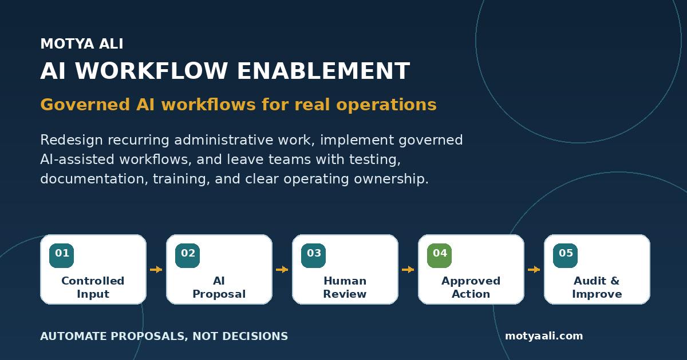

Independent applied case study + working demonstrations
AI Workflow Enablement
A practical operating framework for turning recurring administrative work into organized inputs, clear ownership, focused exception review, reliable follow-through, and human-controlled decisions.

The operational problem
Teams lose time gathering information, chasing owners, rebuilding status, and reviewing routine work as though every item were exceptional.
Requests, meeting notes, documents, deadlines, and decisions often live across email, files, chats, trackers, and individual memory. The result is repeated follow-up, unclear ownership, missing context, and avoidable delay.
This framework separates routine preparation from accountable judgment. It preserves source information, proposes structured records, identifies uncertainty, and keeps final authority with the people responsible for the work.
Primary coordination use case
Meeting Intelligence for fast-moving, distributed teams.
The workflow turns source meeting material into proposed decisions, actions, owners, dates, risks, dependencies, and open questions. A reviewer can correct, approve, reject, or leave records pending before an operating record is generated.
The same control pattern can support front-line coordination: gathering responses from multiple contributors, tracking what is still missing, preparing a clear status for leadership or a client, and retaining the source and decision history.
Second working demonstration
Document intake that prepares routine records and isolates exceptions.
A fictional six-document batch demonstrates duplicate detection, missing project information, uncertain classification, controlled routing, and traceable outcomes.
Every file receives the full manual sequence.
Open, inspect, identify, check, rename, enter metadata, locate the destination, route, and record status.
Routine records are prepared together. Exceptions receive judgment.
Originals remain preserved, incomplete or unsafe records are held, and approved records reach a controlled destination with visible history.
Reusable workflow family
Five related operational architectures.
Each applies the same control pattern while adapting review effort to risk, uncertainty, reversibility, and consequence.
Meeting Intelligence
Prepare reviewed decisions, actions, owners, dates, risks, dependencies, and follow-up records.
Document Intake & Routing
Preserve incoming files, prepare routine metadata, surface exceptions, and route only records that meet the required control.
Project Status Reporting
Turn governed project facts into a draft narrative that is verified and published on schedule.
Work Request Triage
Give requests a controlled intake path, category, owner, service target, escalation, and closure evidence.
SOP Knowledge Assistance
Answer from approved sources, expose uncertainty, respect permissions, and turn knowledge gaps into maintenance work.
Implementation method
The workflow and its operating controls are designed together.
A useful system must account for normal work, exceptions, permissions, failures, adoption, documentation, training, and long-term ownership.
01
Discover & Map
- Business outcome
- Current manual burden
- Users, systems, and ownership
02
Govern & Build
- Routine versus exception paths
- Permissions and failure handling
- Controlled configuration
03
Validate & Document
- Normal and failure tests
- Review-effort measurement
- User and administrator guides
04
Train & Handoff
- Role-specific practice
- Launch support
- Maintenance and improvement plan
Responsible adaptation
Learn the approved process first, then adapt the control pattern to the organization.
The demonstrations are platform-neutral. A real implementation would begin with the organization's existing procedures, systems, terminology, permissions, retention rules, approval authority, and security requirements.
- Map the current workflow and ownership
- Identify routine work and true exceptions
- Configure only approved tools and data
- Test normal, ambiguous, missing-data, permission, and failure scenarios
- Measure cycle time, corrections, backlog, and review burden
- Document, train, and hand off operating ownership
Inspectable evidence
Review the demonstrations, controls, tests, and operating documentation.
The evidence distinguishes working browser behavior from proposed production capabilities and unvalidated outcomes.
Meeting Intelligence Review
Inspect proposed records, edit or reject them, approve valid items, and generate an evidence-backed operating record.
Open the prototype →Document Intake & Routing
Process a fictional batch, confirm routine routing once, resolve three exceptions, and inspect the controlled outcome.
Run the demonstration →Acceptance Test Matrix
Normal, ambiguous, missing-owner, edit, rejection, export, reset, and boundary scenarios.
Open tests →Operating Boundary
What the workflow may prepare, what people review, what is logged, and what remains excluded.
Open boundary →Administrator Runbook
Configuration, validation, review, export, correction, release, and maintenance responsibilities.
Open runbook →Maturity and Limitations
How the portfolio separates demonstrations, prototypes, professional work, architecture, and unvalidated claims.
Read the standard →Professional relevance
Operational discipline first. Technology in service of reliable execution.
This work demonstrates how I approach coordination and process problems: understand the existing environment, organize the moving parts, preserve accountability, make exceptions visible, and create documentation people can operate.